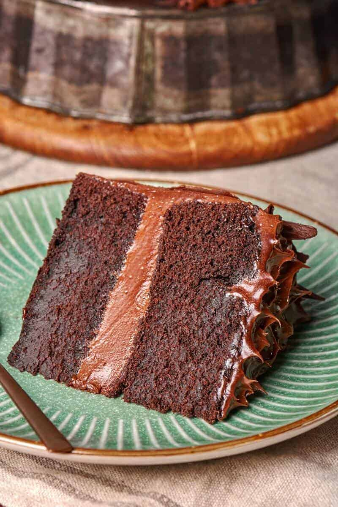

Vegan Chocolate Cake

This vegan chocolate cake has NO eggs, NO butter, and NO milk and yet is the best and easiest vegan cake recipes you’ll ever make- Even non-vegans approve!
Ingredients
- 1 1/2 cups all purpose flour
- 1 cup sugar
- 1/4 cup cocoa powder
- 1 teaspoon baking soda
- 1/2 teaspoon salt
- 1 tablespoon apple cider vinegar
- 1 teaspoon vanilla extract
- 6 tablespoon vegetable oil
- 1 cup water
- 1 cup chocolate frosting
Steps
- Preheat the oven to 180C/350F. Line an 8-inch springform pan or cake pan with parchment paper and set aside.
- In a large mixing bowl, add your dry ingredients and mix well. Add the wet ingredients and mix until a smooth batter remains.
- Transfer to the lined pan and bake for 25-30 minutes, or until a skewer comes out just clean.
- Allow to cool in the pan for 10 minutes, before transferring to a wire rack to cool completely. Once cooled, frost the cake.